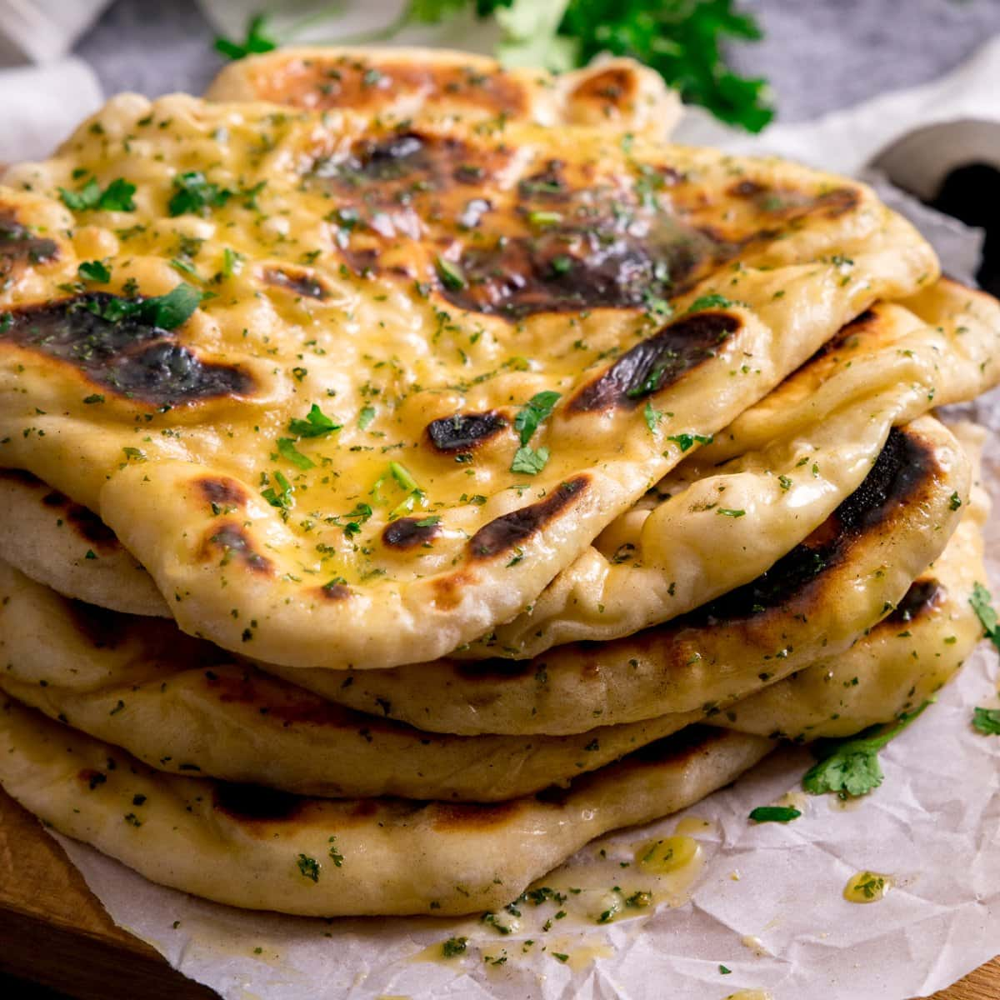

Garlic Naan

Description
Garlic naan is a type of Indian soft bread comparable to
pita bread. Traditionally, naan is made with a yeast-raised dough
that is then placed flat against the walls of a tandoor oven.
Ingredients
-
1/4 cup warm water
-
2 teaspoons granulated sugar
-
1 1/2 teaspoons active dry yeast or instant yeast
-
3/4 cup warm milk
-
3/4 cup plain Greek yogurt or natural plain yogurt
-
1/4 cup vegetable oil plus 2 additional tablespoons
extra for cooking
-
2 cloves garlic minced
-
4 cups plain flour plus extra for dusting 560g
-
1 teaspoon backing powder
-
1 teaspoon salt
Instructions
-
Combine together water, sugar, and yeast. Let sit for
5-10 minutes or until the mixture begins to bubble on top.
-
Add the milk, yogurt, oil, minced garlic, flour, baking powder,
and salt. Mix until the dough comes together with your hands.
-
Turn dough out onto lightly floured surface. Use floured hands to knead
the dough untill smooth, around 3-5 minutes
-
Lightly grease the same mixing bowl with a small spray of cooking oil.
Transfer the dough to the bowl and cover with plastic wrap. Let rest
at room temperature for about an hour until doubled in size.
-
When ready to cook, divide the dough into 10 equal pieces.
Roll into balls, then use a rolling pin to roll each piece of dough
into a large oval, about 6-inches long and 1/8 inch thick.
Repeat with remaining dough.
-
Heat a large cast iron skillet over medium-high heat. Grease skillet all over
with 1/2 teaspoon of the extra olive oil.
-
Place one piece of the naan on the oiled hot skillet and cook until
bubbles form on top, about 1-2 minutes. While cooking,
brush the top with a little oil.
-
Flip and cook for another 1-2 minutes, until large golden
spots appear on the bottom.
-
Remove from the skillet and wrap in a clean kitchen towel. Repeat
with the remaining naan.
Back to the Recipe List